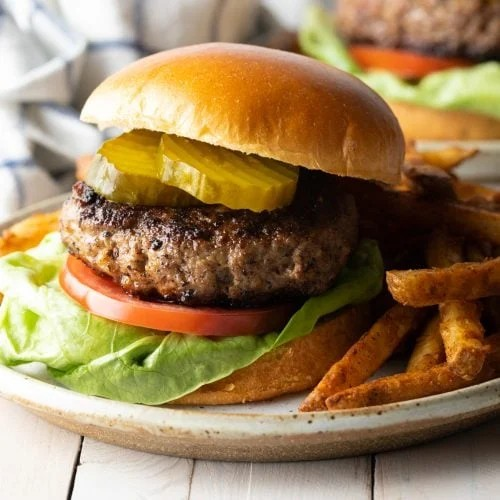

Hamburger

Ingredients:
- 1 lb ground beef
- 4 hamburger buns
- 4 slices of cheese (optional)
- Lettuce, tomato, onion, pickles (optional)
- Ketchup, mustard, mayonnaise (optional)
- Salt and pepper to taste
Steps:
- Preheat a grill or skillet over medium-high heat.
- Divide the ground beef into 4 equal portions and shape them into patties. Season both sides with salt and pepper.
- Cook the patties for about 4-5 minutes on each side, or until they reach your desired level of doneness. If using cheese, place a slice on each patty during the last minute of cooking to melt.
- Toast the hamburger buns on the grill or in a toaster until lightly browned.
- Assemble the burgers by placing the cooked patties on the bottom buns. Add lettuce, tomato, onion, pickles, and condiments as desired. Top with the other half of the bun.
- Serve immediately with your favorite side dishes.
Home